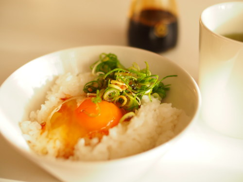

Tamago Kake Gohan

Description
One of my favourite quick, comforting meals to prepare.
Ingredients
Serves 1:
- 1 cup hot cooked white rice
- 1 large egg
- 1/2 teaspoon soy sauce
- kosher salt
- 1/2 teaspoon mirin (optional)
- MSG (optional)
- furikake, to taste
Steps
- Place rice in bowl and, in a shallow indent, break a whole egg. Season with soy sauce, mirin, and MSG.
- Use chopsticks to mix it all together; it should end up being quite frothy and fluffy.
- Sprinkle furikake and adjust seasonings as necessary. Serve immediately.